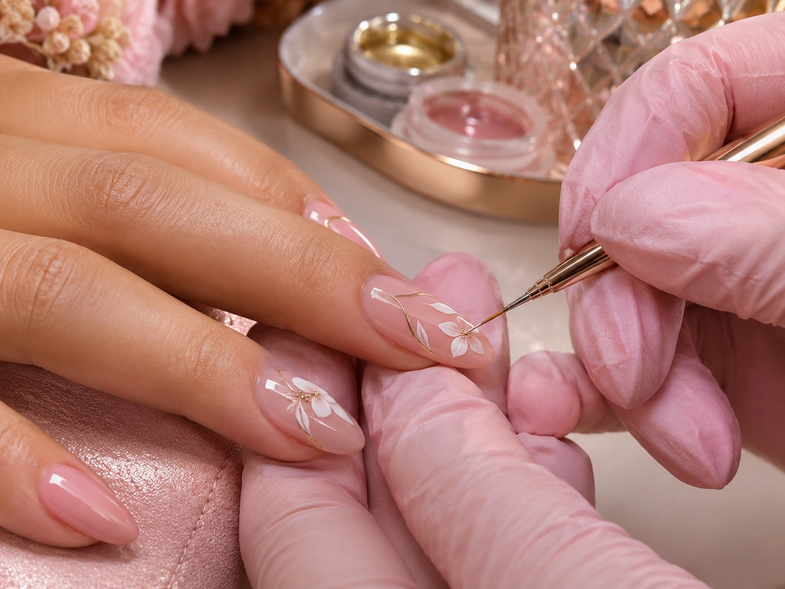

Nail Art
Techniques
Build confidence with deliberate design planning, controlled brushwork, colour placement and clean finishing.
Plan the design. Control the detail. Finish with intention.
By the end of this lesson…
- Choose nail art techniques that suit the nail shape, length and client brief.
- Prepare a simple design plan with colour, placement and finish in mind.
- Use fine brushes and dotting tools with controlled movement.
- Combine details without overcrowding the design.
- Protect the finished art with compatible products and correct curing.
Start with a clear design brief
Translate the client's inspiration into a design that is practical for the nail and service.
- Confirm the preferred style, colours and overall mood.
- Choose one focal nail or detail rather than making every nail compete.
- Consider nail length, shape, available surface and daily lifestyle.
- Decide which techniques are suitable for the products you have.
- Agree on the design before beginning application.
Keep the composition balanced
Repeat a colour or small detail across the set to create harmony. Leave enough negative space so the main feature remains clear.
Build control with fine brushwork
- Choose a liner brush suited to the length and thickness of the line.
- Load a small, controlled amount of product.
- Stabilise your working hand and support the client's finger.
- Move smoothly from a comfortable starting point; avoid repeatedly dragging through wet detail.
- Practise straight lines, curves and fine outlines on a practice tip first.
Repeat small shapes consistently
Dots
Use a dotting tool and consistent pressure to create even circles.
Petals
Place dots or short strokes around a centre point, keeping spacing balanced.
Accents
Add a fine line or small centre detail only when the design needs it.
Make colour transitions look intentional
Colour choice and placement guide the eye through the design.
- Select colours that complement the base shade and each other.
- Test opacity and coverage on a palette or practice tip.
- For gradients, use a technique and compatible product designed for blending.
- Build colour gradually rather than applying a thick layer.
- Follow product-specific curing instructions between layers.
Work with a steady hand and a clear focal point
Fine detail is easier when the hand is supported and the design is broken into manageable steps.
Mark the position and scale of the main detail.
Apply the base shapes with controlled strokes.
Add small accents only after the main design is balanced.
Finish and cure according to the product system.

Add dimension without adding clutter
- Choose embellishments appropriate to the service and client's lifestyle.
- Use only compatible gel, foil, pigment or decorative products.
- Place small accents deliberately and secure them using the product system's instructions.
- Avoid excessive thickness or sharp edges that may catch.
- Keep all uncured products away from skin and cure as directed.
One focal detail is enough
Use scale, spacing and contrast to make a feature stand out. If every nail has a large embellishment, the set can lose visual balance.
Protect the art and inspect the details
| Check | Look for | Finish well |
|---|---|---|
| Linework | Clean edges and consistent thickness | Correct small defects before sealing |
| Composition | Balanced spacing and clear focal point | Remove unnecessary visual clutter |
| Surface | Smooth, even layers without raised edges | Use compatible finishing product |
| Embellishments | Secure placement and no sharp edges | Follow system-specific sealing method |
| Cure | Approved lamp and exact schedule | Never guess or shorten cure time |
Know when to simplify the design
Check whether the layer was ready for the next step and use the product's correction guidance.
Use a better-supported hand, suitable brush and lighter, more deliberate strokes.
Remove or simplify details so the focal point and spacing are clear.
Create a balanced mini design
Use a practice tip or supervised model.
- Choose a base shade and two complementary detail colours.
- Sketch a simple focal point and decide where negative space will remain.
- Practise three line strokes and five evenly spaced dots on a palette or tip.
- Build one small floral or geometric detail using controlled layers.
- Inspect the surface, finish and cure requirements; explain your design choices.
Show consistency and control before increasing the complexity of the design.
Knowledge check
Answer all five questions first. Your score and explanations will appear after you submit your completed quiz.
1. What should you do before beginning nail art?
2. What supports controlled fine linework?
3. How can you avoid an overcrowded design?
4. What should guide curing decorative gel layers?
5. What belongs in the final nail art inspection?
Answer all five questions, then submit your answers.